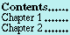
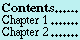

![[HARLEQUIN]](../Graphics/Harlequin-Small.gif)
![[Previous]](../Graphics/Prev.gif)
![[Up]](../Graphics/Up.gif)
![[Next]](../Graphics/Next.gif)
qualified method Glossary Section ``Q'' qualifier Glossary Section ``Q'' query I/O Glossary Section ``Q'' Question-Mark (format directive) Tilde Question-Mark: Recursive Processing quotation (of forms) Single-Quote Backquote Comma quotation (of strings) Double-Quote QUOTE Special Operator QUOTE quote Single-Quote Backquote Comma quoted object Glossary Section ``Q'' quux Nonsense Words
![[Starting Points]](../Graphics/Starting-Points.gif) 
![[Index]](../Graphics/Index.gif)
![[Symbols]](../Graphics/Symbols.gif)
![[Glossary]](../Graphics/Glossary.gif)
![[Issues]](../Graphics/Issues.gif)